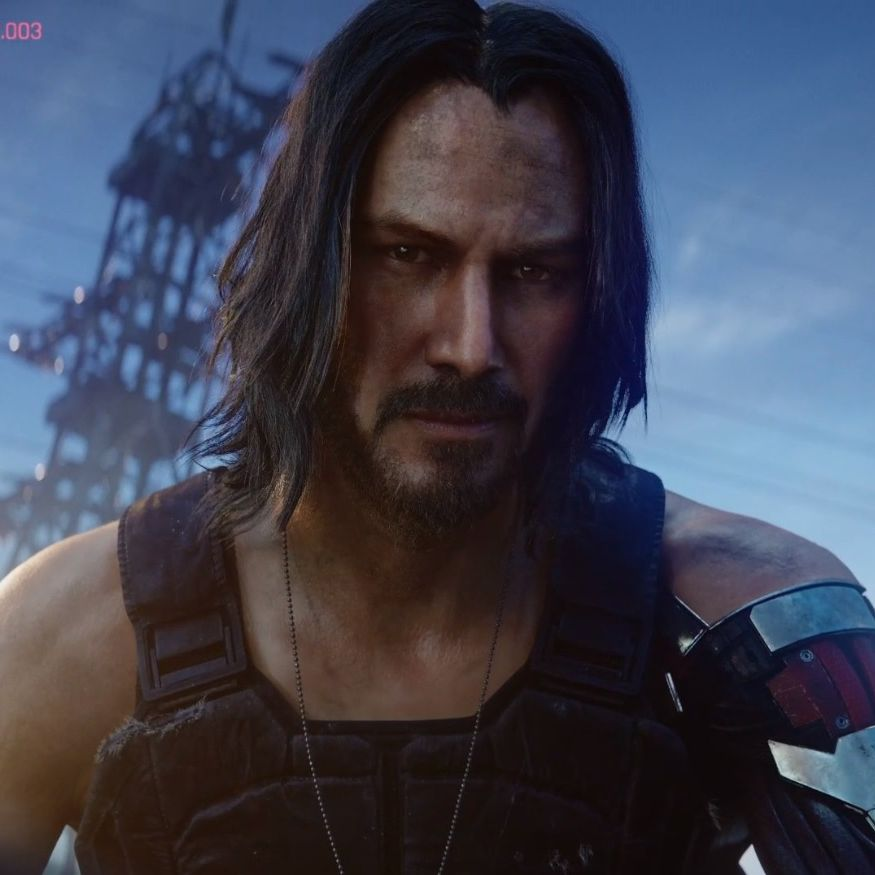
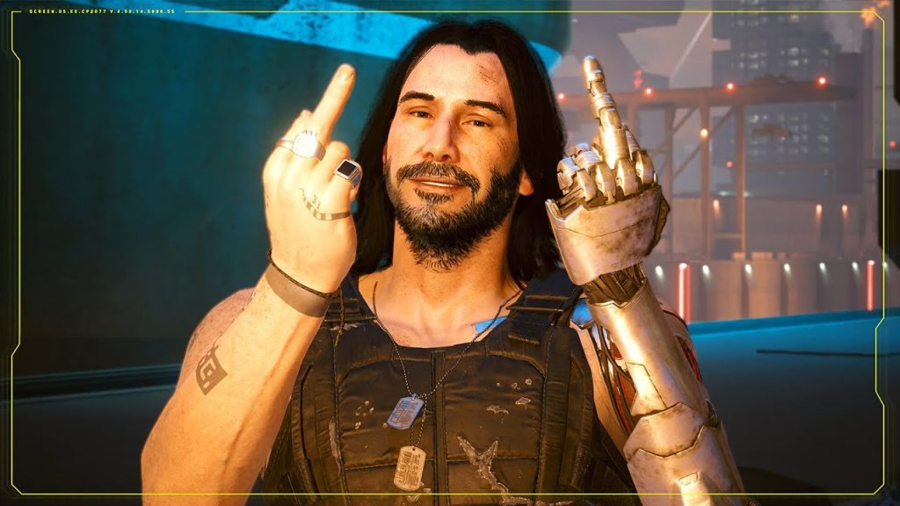
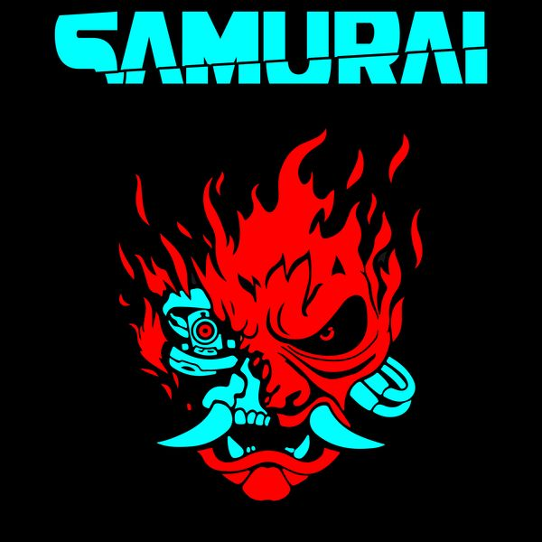

Quem é o Johnny?
Johnny Silverhand é uma lenda em Night City, um ex-roqueiro rebelde e vocalista da famosa banda Samurai e também famoso por ser um anarquista e terrorista. Foi o protagonista na famosa explosão há Arasaka.
No jogo Cyberpunk 2077, ele existe como um constructo de inteligência artificial que fica preso na cabeça de V (protagonista do jogo). Onde ele tenta apagar a mente de V e tomar seu corpo, mesmo que contra sua vontade.Ao decorrer do jogo,
Johnny fica amigo de V e não quer "matar" ele, podendo se sacrificar em um dos finais possíveis do jogo.
Galeria


